Chaque joueur dirige un domaine, représenté par son deck de cartes. De lignée en lignée, il le transforme : il achète de nouvelles cartes, se sépare des inutiles, fait grandir sa population, son économie et sa noblesse. Le premier qui parvient à traverser tout son deck en une seule lignée l'emporte.
2 à 4 joueurs30 minutes environ
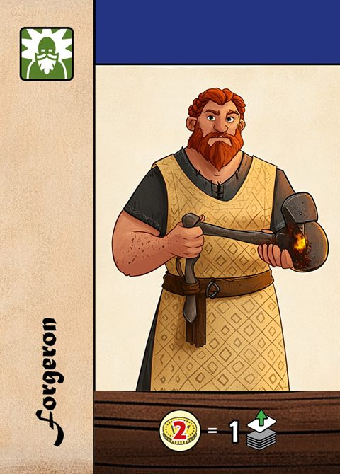
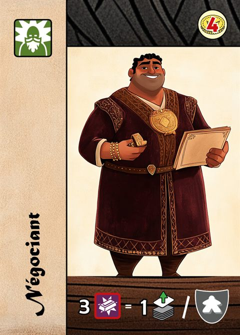
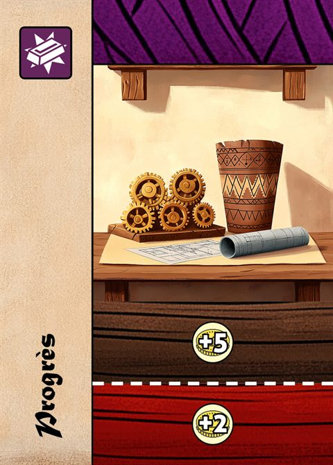
Sommaire
But du jeu2
Matériel2
Lire une carte3
Mise en place4
Le plateau personnel4
Les lignées5
Le tour de jeu6
Mettre fin à sa lignée7
Fin de partie7
Aide de jeu : les effets des cartes8
Aide de jeu : les Privilèges9
Aide de jeu : le deck de départ10
Aide de jeu : les Domaines11
1But du jeu
Le premier joueur qui pioche la dernière carte de son deck gagne immédiatement la partie.
Au début de la partie, votre deck compte 11 cartes. Vous allez le jouer plusieurs fois, en plusieurs lignées. À chaque nouvelle lignée, vous mélangez toutes vos cartes et vous recommencez, avec un domaine un peu plus fort.
2Matériel
36cartes de départ : 9 par couleur (bleu, jaune, rouge, vert). Les 4 decks sont identiques.
8cartes Domaine, distribuées au hasard pour rendre chaque deck différent.
34cartes Avancée, qui forment la pioche commune.
20tuiles Privilège, numérotées de 1 à 20.
4plateaux personnels, tous identiques.
8marqueurs : 2 par joueur, pour les jauges de Population et d'Économie.
—des pièces d'Or, pour la réserve de chaque joueur.
3Lire une carte
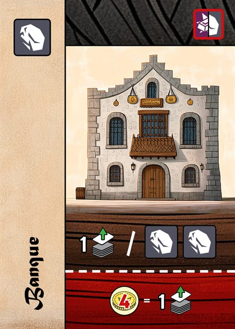
123456
Ressources. Ce que la carte rapporte une fois posée dans votre aire de jeu : Pierre , Métal ou Érudit . La Banque porte 1 Pierre.
Coût d'achat. Seules les cartes Avancée en ont un : de l'Or, ou une Ressource (Pierre ou Métal, au choix). La Banque coûte 1 Ressource.
Bandeau. Il indique d'où vient la carte : la couleur du joueur pour une carte de départ, violet pour un Domaine, noir pour une carte Avancée. Il n'a aucun effet en jeu.
Nom de la carte.
Effet. Ce que vous pouvez faire en jouant la carte. Ici : piochez 1 carte pour chaque tranche de 2 Pierres dans votre aire de jeu.
Effet Rouge. Sous la ligne pointillée : ce que le joueur assis à votre droite peut faire quand vous jouez la carte. Ici : payer 4 Or pour piocher 1 carte.
Les symboles
Or. La monnaie : elle paye les achats et de nombreux effets.
Pierre. Une Ressource.
Métal. Une Ressource.
Ressource. Pierre ou Métal, au choix.
Érudit. Il compte pour obtenir des Privilèges et pour certains effets. Ce n'est pas une Ressource.
Piocher 1 carte de son deck.
Blason Population.
Blason Économie.
Blason Noblesse.
4Mise en place
Chaque joueur prend les 9 cartes de départ de sa couleur. Il y ajoute 2 cartes Domaine tirées au hasard, qu'il regarde sans les montrer. Il mélange ces 11 cartes face cachée : c'est son deck. Les Domaines restants sont rangés dans la boîte sans être regardés (à 4 joueurs, les 8 sont distribués).
Chaque joueur prend un plateau personnel et place ses 2 marqueurs sur la case de départ des pistes de Population et d'Économie.
Mélangez les 34 cartes Avancée face cachée : c'est la pioche commune. Révélez les 4 premières à côté d'elle : c'est la Rivière.
Mélangez les 20 tuiles Privilège face cachée, puis révélez-en 4 face visible.
Désignez le premier joueur au hasard. En compensation, le 2e joueur reçoit 1 Or, le 3e 2 Or et le 4e 3 Or.
Tous les joueurs débutent leur première lignée en même temps : chacun prend son Or et pioche ses cartes (voir « Débuter une lignée »). Cet Or s'ajoute à sa compensation.
5Le plateau personnel
Votre plateau porte trois jauges. Elles progressent en fin de lignée, d'un niveau au plus par jauge, et rendent chacune de vos lignées suivantes plus fortes.
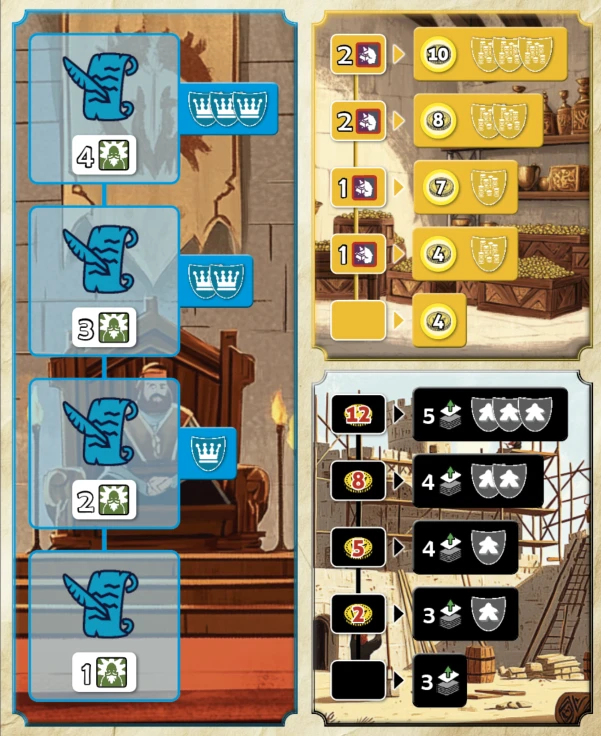
À gauche : la Noblesse
4 emplacements pour vos tuiles Privilège, du bas vers le haut. Le chiffre indique les Érudits nécessaires ; les couronnes, les blasons Noblesse gagnés.
En haut à droite : l'Économie
À gauche de chaque case, les Ressources à avoir dans son aire de jeu pour monter ; à droite, l'Or reçu au début de chaque lignée et les blasons Économie.
En bas à droite : la Population
À gauche de chaque case, l'Or à payer pour monter ; à droite, les cartes piochées au début de chaque lignée et les blasons Population.
Les marqueurs partent de la case vide, tout en bas de chaque jauge. Vos blasons sont ceux de votre niveau actuel : ils ne s'additionnent pas d'un niveau à l'autre.
6Les lignées
Une lignée commence quand un joueur repart avec son deck complet, et se termine quand il décide d'y mettre fin, ou quand il gagne. Chaque joueur gère ses lignées à son rythme : elles se décalent d'un joueur à l'autre au fil de la partie.
Débuter une lignée
Prenez l'Or indiqué par votre jauge d'Économie, plus celui de vos Privilèges.
Piochez le nombre de cartes indiqué par votre jauge de Population.
Si cette pioche vous fait piocher la dernière carte de votre deck, vous gagnez aussitôt, même si ce n'est pas votre tour.
Votre main : secrète. Les autres joueurs savent seulement combien de cartes vous avez.
Votre aire de jeu : les cartes que vous avez jouées. Elles y restent jusqu'à ce que leurs ressources soient dépensées.
Votre défausse : les cartes dont les ressources ont été dépensées.
7Le tour de jeu
En commençant par le premier joueur, puis dans le sens du tour, chaque joueur effectue une seule action parmi les quatre suivantes. Il est interdit de passer son tour.
Jouer 1 carte
Posez une carte de votre main dans votre aire de jeu, puis appliquez son effet, si vous le voulez.
Puis le joueur assis à votre droite (celui qui a joué juste avant vous) peut appliquer l'Effet Rouge de la carte, même si vous n'avez pas appliqué son effet.
Acheter 1 carte
Achetez une carte de la Rivière en payant son coût. L'Or vient de votre réserve. Pour payer des Ressources, défaussez des cartes de votre aire de jeu qui les portent.
La carte achetée remplace obligatoirement une carte de votre deck, qui est détruite gratuitement. Elle prend sa place (voir ci-dessous). Complétez ensuite la Rivière avec la première carte de la pioche commune.
Utiliser un Privilège
Si vous possédez le Privilège 13, 14 ou 15, payez son coût pour détruire ou piocher 1 carte. Cela remplace votre action : une seule fois par tour, mais vous pouvez recommencer aux tours suivants.
Mettre fin à sa lignée
Si vous avez 0 ou 1 carte en main, vous pouvez clore votre lignée : vos jauges progressent, puis vous repartez avec tout votre deck. Voir le chapitre suivant.
Où va la carte achetée
Elle prend la place de la carte que vous détruisez pour elle :
une carte de votre main : la carte achetée arrive dans votre main, et vous pourrez la jouer à un prochain tour ;
une carte de votre aire de jeu : la carte achetée arrive dans votre aire de jeu. Ses ressources sont disponibles (celles de la carte détruite sont perdues), mais son effet ne se déclenche pas ;
une carte de votre défausse : la carte achetée arrive dans votre défausse et ne servira qu'à la lignée suivante ;
la première carte de votre pioche, sans la regarder : elle est détruite, et la carte achetée est posée à sa place, sur le dessus de votre pioche.
Un achat ne change donc jamais le nombre de cartes de votre deck. Quand la pioche commune est vide, la Rivière n'est plus complétée.
8Mettre fin à sa lignée
Avec 0 ou 1 carte en main, appliquez ces étapes dans l'ordre. Chacune est facultative.
Noblesse. Si votre aire de jeu compte assez d'Érudits pour le premier emplacement libre de votre piste Noblesse (1, puis 2, 3 et 4), prenez l'un des 4 Privilèges visibles. Les Érudits ne sont pas dépensés. Révélez un nouveau Privilège pour le remplacer.
Population. Si vous avez assez d'Or, payez le coût du niveau suivant et montez d'un niveau.
Économie. Si votre aire de jeu compte assez de Ressources (Pierre ou Métal), montez d'un niveau. Les Ressources ne sont pas dépensées.
Or restant. Défaussez tout l'Or qui vous reste (sauf avec le Privilège 18).
Nouvelle lignée. Mélangez face cachée votre main, votre aire de jeu et votre défausse pour reformer votre deck, puis débutez une nouvelle lignée. À votre prochain tour, vous pourrez jouer ou acheter une carte.
À retenir
Chaque jauge monte d'un seul niveau par fin de lignée, et vous ne prenez qu'un seul Privilège.
9Fin de partie
La partie s'arrête immédiatement quand un joueur :
pioche la dernière carte de son deck, de quelque façon que ce soit (effet, Recherche, Effet Rouge, début de lignée) ;
ou détruit la dernière carte de sa pioche.
Ce joueur gagne. Il n'y a qu'un vainqueur : les autres joueurs ne sont pas classés.
Égalité
Si plusieurs joueurs piochent leur dernière carte en même temps (par un Effet Rouge, par exemple), le joueur dont c'est le tour l'emporte. S'il n'en fait pas partie, c'est le premier d'entre eux dans le sens du tour, à partir du joueur qui a joué la carte.
10Aide de jeu
Les effets des cartes
Tous les effets sont facultatifs. Vous pouvez jouer une carte « à vide », sans appliquer son effet.
Quand un effet a plusieurs parties (« Gagne 1 Or puis Achète 1 carte »), elles sont indépendantes : vous pouvez appliquer la seconde sans la première.
Quand un effet compte quelque chose (ressources, Érudits, blasons), on ne regarde que ce que possède le joueur qui l'applique : son aire de jeu et son plateau. La carte que vous venez de jouer compte pour son propre effet.
Payer. L'Or est retiré de votre réserve. Pour payer de la Pierre ou du Métal, défaussez des cartes de votre aire de jeu qui en portent. Une carte défaussée l'est entièrement : ses ressources en trop et ses Érudits sont perdus. La carte que vous venez de jouer peut payer son propre effet.
Piocher. Prenez la première carte de votre deck en main. Quand un effet fait piocher plusieurs cartes, vous les piochez toutes d'un coup.
Détruire. Retirez définitivement une carte de votre deck : de votre main, de votre aire de jeu, de votre défausse, ou bien la carte du dessus de votre pioche, sans la regarder. Vous pouvez détruire la carte que vous venez de jouer. Si l'effet détruit plusieurs cartes, vous pouvez prendre plusieurs fois le dessus de votre pioche, et en détruire moins que permis.
Rechercher. Regardez votre deck, choisissez 1 carte et prenez-la en main, puis remélangez votre deck. Vous pouvez rechercher moins de cartes que permis.
Achète 1 carte. Un achat en plus de votre action, exactement comme l'action Acheter (coût normal, remplacement obligatoire). S'il y a plusieurs achats, la Rivière est complétée entre deux.
Lvl up. Montez d'un niveau la jauge indiquée, sans payer le coût du plateau. On ne dépasse jamais le niveau 4.
« Pioche 1 carte pour chaque 2 Pierres dans son aire de jeu » : comptez les Pierres présentes et faites l'effet une fois par tranche complète. Rien n'est dépensé.
« Paye 3 Métal pour piocher 1 carte par blason Population » : payez une seule fois, puis piochez autant de cartes que vous avez de blasons Population.
Quand un effet fait payer puis compte, on compte avant de payer : les ressources défaussées pour payer comptent encore.
« Paye X Or pour piocher (ou détruire) 1 carte » : une seule fois par carte jouée.
Marché : vendez autant de Pierres et de Métal que vous le souhaitez. Chaque ressource des cartes défaussées rapporte : une carte portant 1 Pierre et 1 Métal rapporte 2 fois.
Les Effets Rouges
Quand un joueur joue une carte qui a un Effet Rouge, seul le joueur assis à sa droite (celui qui a joué juste avant lui) peut l'appliquer. Les autres joueurs ne peuvent pas en profiter. Ce joueur utilise son propre Or, ses propres ressources et son propre plateau. L'Effet Rouge reste possible même si le joueur actif n'a pas appliqué l'effet de sa carte.
Les Privilèges
Ils s'obtiennent en fin de lignée, grâce aux Érudits, ou par certaines cartes (Religion, Chancellerie, Cour du roi). Vous en possédez 4 au plus.
Un Privilège obtenu par une carte occupe lui aussi un emplacement de votre piste Noblesse : il ne demande pas d'Érudits, mais il donne les blasons de l'emplacement et rend le Privilège suivant plus exigeant.
Sauf mention « au hasard dans la pioche », on choisit parmi les 4 Privilèges visibles. Quand la pioche de Privilèges est vide, ils ne sont plus remplacés.
Les ressources ajoutées par les Privilèges comptent partout : pour payer, pour les jauges, pour les Privilèges et pour les effets des cartes.
1Les cartes de la Rivière vous coûtent 2 Or de moins (jamais moins de 0 ; le coût en Ressources ne change pas).
2Chaque carte Avancée de votre aire de jeu rapporte aussi 1 Érudit.
3Chaque carte Avancée de votre aire de jeu rapporte aussi 1 Pierre.
4Chaque carte Avancée de votre aire de jeu rapporte aussi 1 Métal.
51 blason Population supplémentaire.
61 blason Économie supplémentaire.
71 blason Noblesse supplémentaire.
8Début de lignée : piochez 1 carte de moins que prévu, puis prenez 1 carte de votre choix dans votre deck avant de le remélanger (obligatoire).
9Début de lignée : gagnez 2 Or de plus par blason Population.
10Début de lignée : gagnez 2 Or de plus par blason Noblesse.
11Début de lignée : gagnez 2 Or de plus par blason Économie.
12Début de lignée : piochez 1 carte de plus, puis défaussez 1 carte de votre main (obligatoire ; elle n'est pas détruite).
13À la place de votre action : payez 3 Pierres pour détruire 1 carte.
14À la place de votre action : payez 2 Métal pour piocher 1 carte.
15À la place de votre action : payez 6 Or pour piocher 1 carte.
161 Érudit permanent, comme s'il était sur une carte de votre aire de jeu, y compris pour obtenir un Privilège.
17Chaque fois que vous détruisez 1 carte, y compris la carte remplacée lors d'un achat, gagnez 2 Or.
18En fin de lignée, vous gardez l'Or qui vous reste au lieu de le défausser.
19Début de lignée : gagnez 3 Or de plus.
20Chaque fois que vous jouez une carte Avancée, gagnez 2 Or, même sans appliquer son effet.
Au début d'une lignée, on prend son Or et ses cartes, puis on applique le Privilège 12, puis le 8.
Le deck de départ 9 cartes, identiques pour chaque couleur
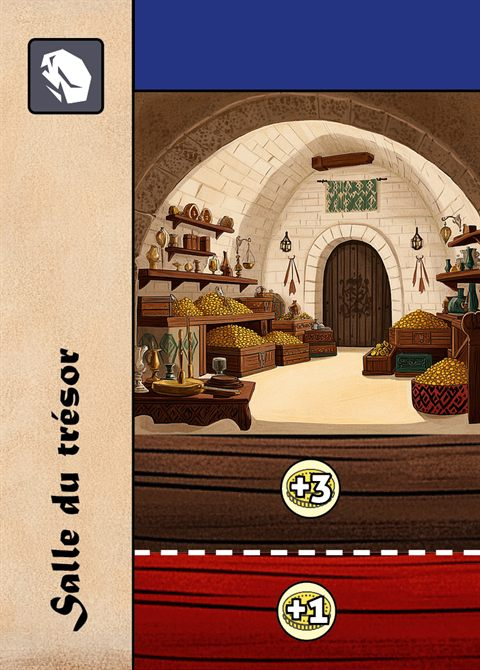
Salle du trésor
1 Pierre
Gagne 3 Or.
Effet Rouge : gagne 1 Or.
Forgeron
1 Érudit
Paye 2 Or pour piocher 1 carte.
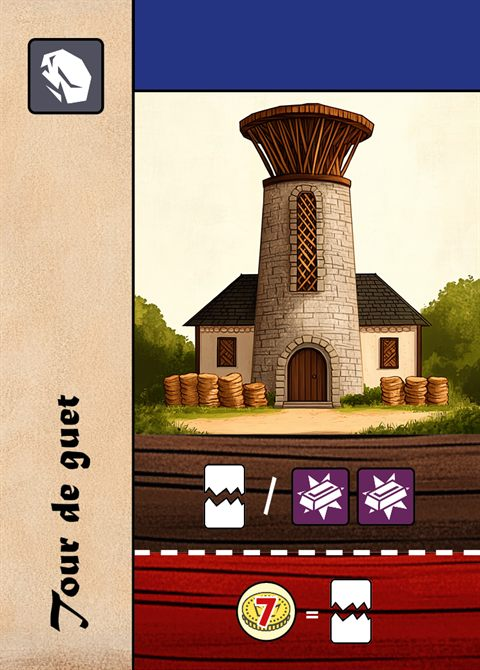
Tour de guet
1 Pierre
Détruit 1 carte pour chaque 2 Métal dans son aire de jeu.
Effet Rouge : paye 7 Or pour détruire 1 carte.
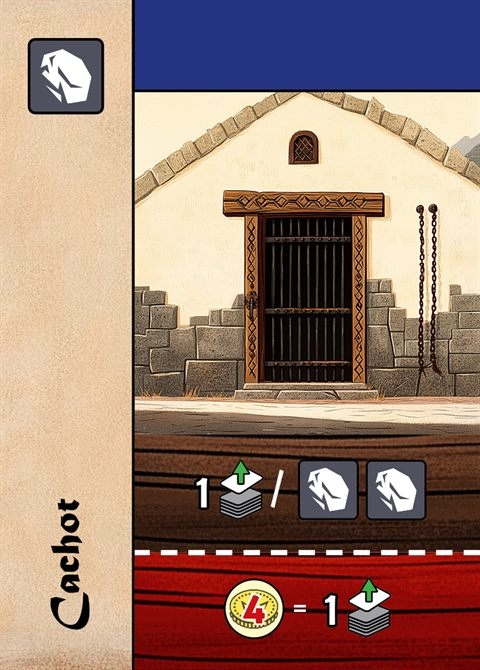
Cachot
1 Pierre
Pioche 1 carte pour chaque 2 Pierres dans son aire de jeu.
Effet Rouge : paye 4 Or pour piocher 1 carte.
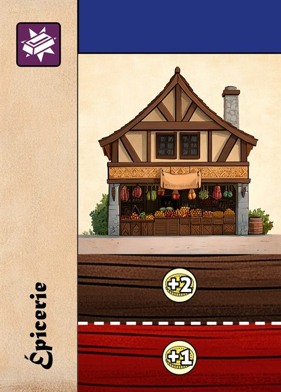
Épicerie
1 Métal
Gagne 2 Or.
Effet Rouge : gagne 1 Or.
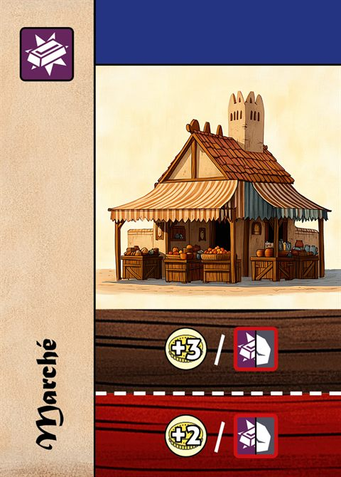
Marché
1 Métal
Paye de la Pierre et du Métal pour gagner 3 Or par ressource vendue.
Effet Rouge : idem, 2 Or par ressource vendue.
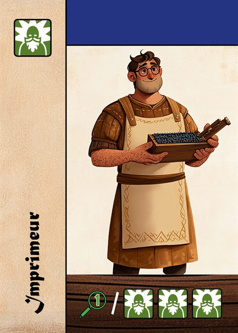
Imprimeur
1 Érudit
Recherche 1 carte pour chaque 3 Érudits dans son aire de jeu.
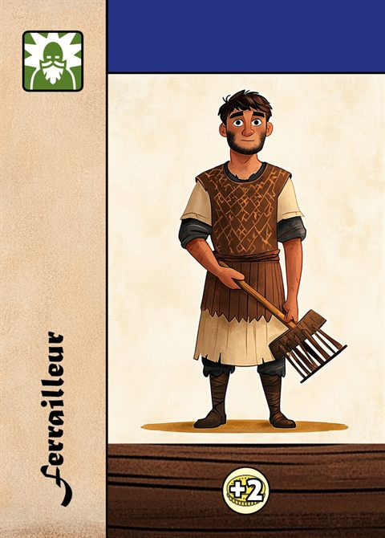
Ferrailleur
1 Érudit
Gagne 2 Or.
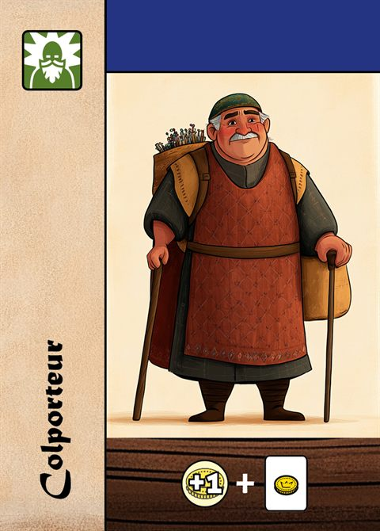
Colporteur
1 Érudit
Gagne 1 Or, puis achète 1 carte.
Les 8 Domaines
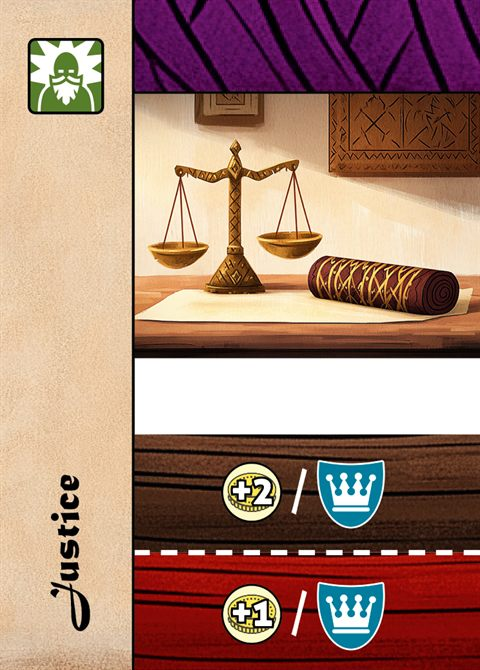
Justice
1 Érudit
Gagne 2 Or par blason Noblesse.
Effet Rouge : gagne 1 Or par blason Noblesse.
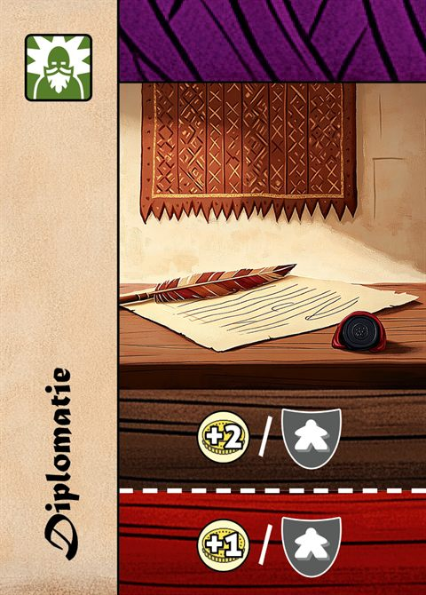
Diplomatie
1 Érudit
Gagne 2 Or par blason Population.
Effet Rouge : gagne 1 Or par blason Population.
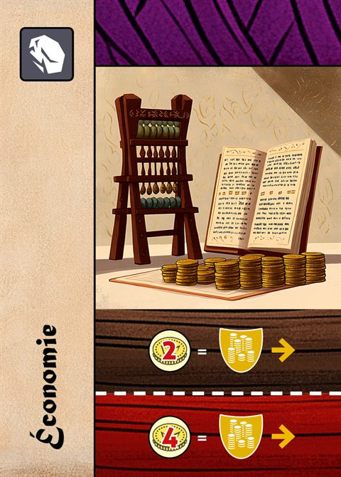
Économie
1 Pierre
Paye 2 Or pour Lvl up Économie.
Effet Rouge : paye 4 Or pour Lvl up Économie.
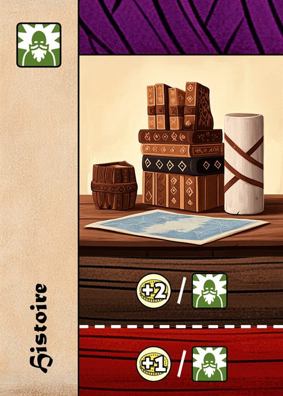
Histoire
1 Érudit
Gagne 2 Or par Érudit.
Effet Rouge : gagne 1 Or par Érudit.
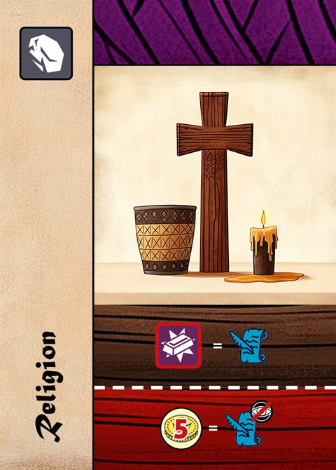
Religion
1 Pierre
Paye 1 Métal pour prendre 1 Privilège parmi les 4 visibles.
Effet Rouge : paye 5 Or pour prendre 1 Privilège au hasard dans la pioche.